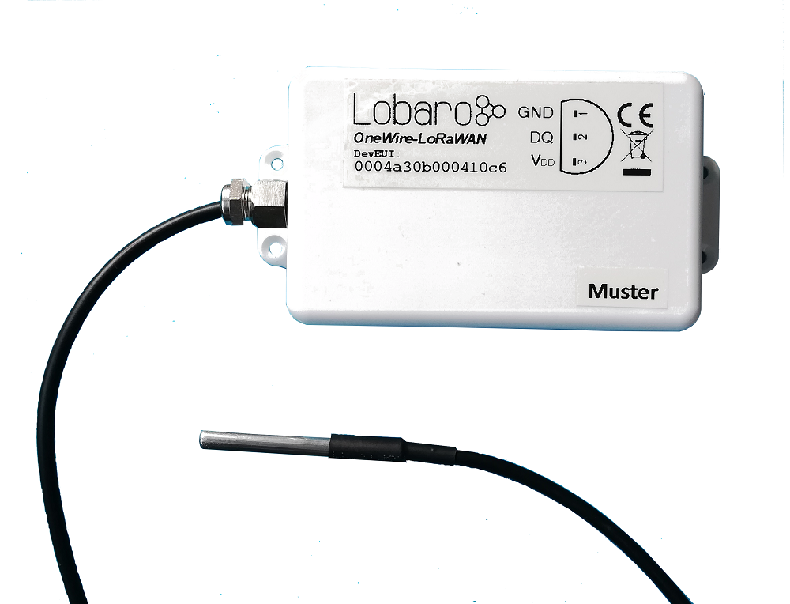

1-Wire LoRaWAN Bridge

Consider using the latest firmware on your hardware
Target Measurement / Purpose
Supports up to 20 DS18x20 1-Wire temperature sensors. The temperature form all sensors in read regualarly and send via LoRaWAN uplink. When the payload gets too big for a single LoRaWAN message, it is split into multiple uplinks.
Configuration
Without configuration the sensors will be transmitted ordered by the 48 Bit id, ignoring the Sensorfamily prefix and the Checksum.
| name | description | example value |
|---|---|---|
SendInternalTemp |
Toggle output of internal sensor | "true" or "false" |
SensorIdOrder |
Semicolon separated list of 48 Bit IDs in hex | 22ffffff0000;44ffffff0000;11ffffff0000 |
Payload
Example payloads for each port:
Status Message (Port 1)
Payload: (No Example yet)
Decoded:
{ "temp": 20.4, "vBat": 3.0, "version": "v0.2.0" }
Data Message (Port 2)
Structure:
| name | pos | len | type | description |
|---|---|---|---|---|
| success | 0 | 1 | uint8 |
0 = Read error, 1 = Success |
| sensor id | 1 | 6 | []byte |
6-Byte 1-Wire Sensor Id |
| temperature | 3 | 2 | int16 BE |
Temperature in 1/10 °C |
| ... | ... sensor id and temperature fields repeat ... |
Example Payload:
01551e46920d0200da96b446920c0200d7dafc46920d0200d5202e4692050200dc
Decoded:
{ "sensors": [ { "id": "551e46920d02", "temp": 21.8 }, { "id": "96b446920c02", "temp": 21.5 }, { "id": "dafc46920d02", "temp": 21.3 }, { "id": "202e46920502", "temp": 22 } ], "success": true }
Parser
TheThingsNetwork (TTN)
function readVersion(bytes) { if (bytes.length<3) { return null; } return "v" + bytes[0] + "." + bytes[1] + "." + bytes[2]; } function parse_sint16(bytes, idx) { bytes = bytes.slice(idx || 0); var t = bytes[0] << 8 | bytes[1] << 0; if( (t & 1<<15) > 0){ // temp is negative (16bit 2's complement) t = ((~t)& 0xffff)+1; // invert 16bits & add 1 => now positive value t=t*-1; } return t; } function parse_uint16(bytes, idx) { bytes = bytes.slice(idx || 0); var t = bytes[0] << 8 | bytes[1] << 0; return t; } function parse_hex(bytes, idx, end) { var chars = "0123456789abcdef"; bytes = bytes.slice(idx || 0, end || null); var s = ""; for (var i=0; i<bytes.length; i++) { var byte = bytes[i]; s += chars.charAt(byte>>4); s += chars.charAt(byte & 0xf); } return s; } function DecoderPort1(bytes) { return { "version":readVersion(bytes), "temp": parse_sint16(bytes, 3) / 10, "vBat": parse_uint16(bytes, 5) / 1000, }; } function DecoderPort2(bytes) { // Decode an uplink message from a buffer // (array) of bytes to an object of fields. var sensors = []; var success = false; var pos = 0; if ( bytes.length ) { pos+=1; success = bytes[0] !== 0; } var left = bytes.length - pos; while (left>=8) { var sensor = { //'id_': bytes.slice(pos, pos+6), 'id': parse_hex(bytes, pos, pos+6), 'temp': parse_sint16(bytes, pos+6) / 10.0 }; sensors.push(sensor); pos += 8; left = bytes.length - pos; } // if (port === 1) decoded.led = bytes[0]; var decoded = {}; decoded['success'] = success; decoded['sensors'] = sensors; return decoded; } function Decoder(bytes, port) { switch (port) { case 1: return DecoderPort1(bytes); case 2: return DecoderPort2(bytes); } return { "error": "Invalid port", "port": port }; } module.exports = function (payload, meta) { const port = meta.lora.fport; const buf = Buffer.from(payload, 'hex'); return Decoder(buf, port); }